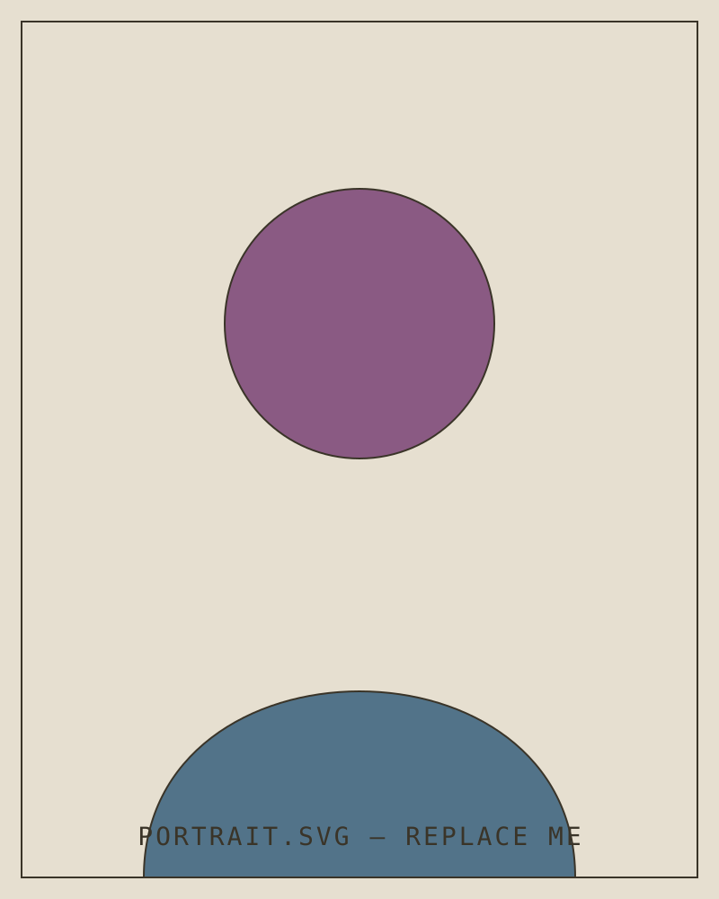

Me (in so many words)
I’m currently jaywalking at the intersection of brand, product, and software design to produce tools that streamline teams’ capabilities and inspire innovation.
In prior roles, I’ve crafted global creative campaigns, organizational rebrands, and other vivid endeavors.
I’ve come to believe successful creative work is a variable combination of:
- authentic (native or relative to brand)
- clever (unique in presence and function)
- fun (exactly what it says)
- practical (lorem — your words here)
- useful (lorem — your words here)
While my books are full at the moment, I’m open for fun or unique collaborations in 2027.
Where I’ve been
- Google Search (via Prpl)UX Comms Designer2024 — present
- Delta Air LinesArt Director2023 — 2024
- StordSenior Brand Designer2022 — 2023
- MorrisonArt Director2017 — 2021
- (various)Designer2015 — 2017
- CNNOn-Air Designer2012 — 2015
Places I’ve spoken
- Kennesaw State University
- College of St Benedict’s / St John’s University
- City College of New York
- The Creative Circus
- Portfolio Center
- The University of Georgia
- Georgia State University
- Georgia Tech
In print (and pixels)
- Underconsideration — Brand New
- The AJC
- The New York Times
- Outsports
- Fortune
- TechCrunch

Richard Wade Morgan — somewhere below the gnat lineOriginally from South Georgia, I’m the first person in my family to pursue the arts + entrepreneurship full-time. I am also proud to practice as a queer creative here. This background fuels my pursuit of understanding others as they truly are, and how to best communicate someone to their own audience.
Raise Hell, Praise Dale, Go Dawgs.